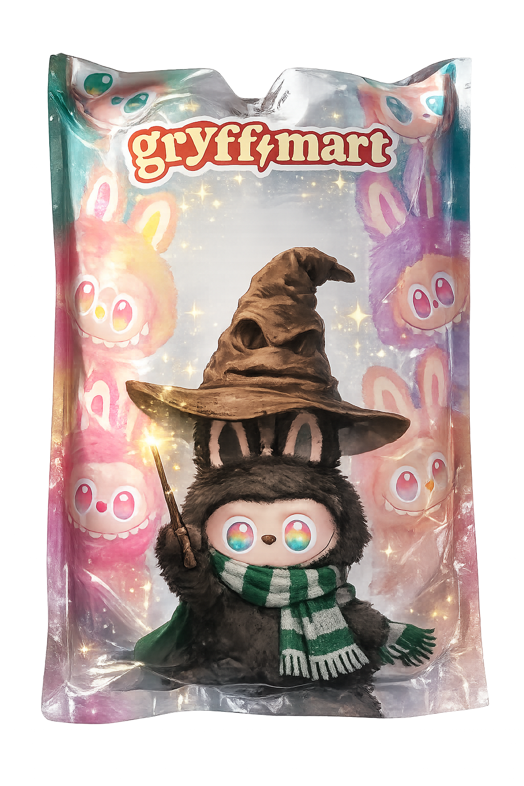

Слизерин ассоциируется с роскошью, любовью к уникальным вещам и, конечно же, яркой индивидуальностью. Мы решили, что наш подарок должен совмещать все эти пункты, а потому сегодня мы дарим вам лабубу. За каждым своя история, свой уникальный дизайн, а еще — прекрасная возможность носить его всегда с собой, ведь роскошь нужно не прятать, а носить с удовольствием.
хохо, гриффиндорцы 💋